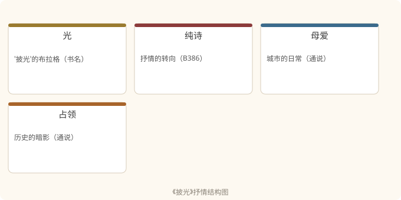

披光
一、基本信息
| 作者 | 雅罗斯拉夫·塞弗尔特 |
|---|---|
| 成书/出版 | 1940年（Britannica B386：Světlem oděná (1940; Robed in Light)——中译名待核） Jaroslav Seifert — Encyclopaedia Britannica（百科全书） |
| 国别/地区 | 捷克 |
| 时代 | 近代 · 20世纪40年代初 |
| 体裁 | 诗集 |
| 语言 | 捷克语 |

《披光》抒情结构图（主题·结构图）
二、创作背景
Britannica（B386）：Světlem oděná (1940; Robed in Light)——诗集列表。
Britannica（B386）：塞弗尔特——从'proletarian poetry'转向'so-called pure poetry'的抒情要素。
Britannica（B386）：最常写'历史与捷克-斯洛伐克的其他方面'——本集处于占领前夕（1940说待核）。
三、内容脉络
（通说待核——B386未载篇目）'披光'的布拉格抒情：母爱与城市。
（通说待核）占领年代的暗影（时代背景通说待核）。
四、主要人物表
| 人物 | 身份 | 说明 |
|---|---|---|
| 抒情'我' | 捷克诗人 | （B386 语境） |
五、主题与艺术特点
- '纯诗'的抒情要素（B386：so-called pure poetry）。
- 布拉格与母性（通说待核）。
- 历史与个人的对位（B386：the history...of Czechoslovakia）。
六、影响与评论
- Britannica：1984诺奖——'first Czech'（B386）。
Jaroslav Seifert — Encyclopaedia Britannica（百科全书） - Britannica：'so-called pure poetry'（B386）。
Jaroslav Seifert — Encyclopaedia Britannica（百科全书）
七、阅读建议
难点
- 捷克语（读译本）。
- '纯诗'论语境（通说待核）。
- 《披光》中译名（《被光所装扮》）待核。
- 捷克文原版（公有领域状态待核）。
塞弗尔特中期；与《泪水中的城市》对读。
八、待核实
- 1940年出版细节待核。
- 篇目核对（B386未载）。
- 中译名两说待核。
本页主要来源
雅罗斯拉夫·塞弗尔特的其他收录作品：披光